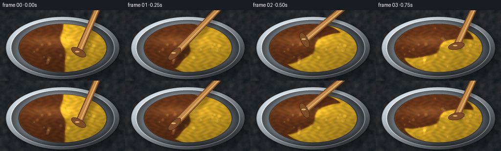
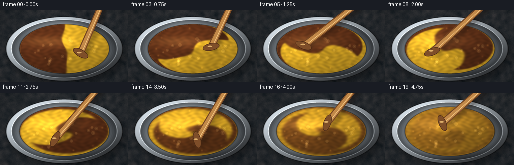
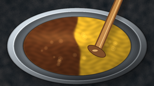
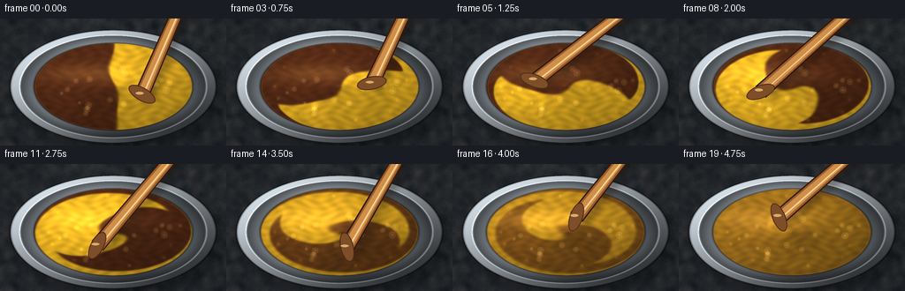
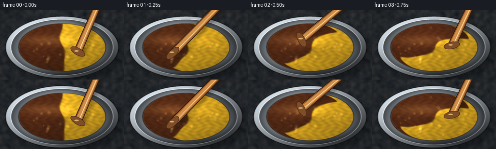

CODING AGENTS AS PIXEL WORLD MODELS
traex/DeepSeek-V4.1-Flash · material_0005
点击播放 · 原生 RGB 像素
逐轮保存的候选
回放视频、检查图与代码变化。
每份候选均可单独播放。实际图片检查记录在下方工具轨迹中。
候选 01播放与检查图
点击播放 · 原生 RGB 像素


展开代码变化
--- 上一保存版本
+++ 本次保存版本
@@ -0,0 +1,341 @@
+from pathlib import Path
+
+import numpy as np
+from PIL import Image, ImageDraw, ImageFilter
+from scipy.ndimage import gaussian_filter, map_coordinates
+
+import artifact_io
+
+
+CASE_DIR = Path(__file__).resolve().parent
+W, H = 256, 144
+FPS = 4.0
+FRAMES = 20
+S = 3
+RW, RH = W * S, H * S
+
+CX, CY = RW * 0.5, RH * 0.535
+RX_OUTER, RY_OUTER = RW * 0.455, RH * 0.445
+RX_PAINT, RY_PAINT = RX_OUTER * 0.77, RY_OUTER * 0.77
+
+BROWN = np.array([100.0, 51.0, 25.0])
+YELLOW = np.array([244.0, 188.0, 42.0])
+
+
+def normalized_noise(seed, sigma):
+ rng = np.random.default_rng(seed)
+ field = gaussian_filter(rng.normal(size=(RH, RW)).astype(np.float32), sigma)
+ return (field - field.mean()) / (field.std() + 1e-6)
+
+
+def make_paint_field():
+ y, x = np.mgrid[0:RH, 0:RW].astype(np.float32)
+ px = (x - CX) / RX_PAINT
+ py = (y - CY) / RY_PAINT
+
+ boundary = 0.018 + 0.055 * np.sin(3.1 * py) + 0.021 * np.sin(7.0 * py + 0.8)
+ edge = 0.020 + 0.006 * np.sin(9.0 * py)
+ concentration = 0.5 + 0.5 * np.tanh((px - boundary) / edge)
+ concentration += 0.012 * np.sin(12.0 * py + 5.0 * px) * np.exp(-((px - boundary) / 0.12) ** 2)
+ return np.clip(concentration, 0.0, 1.0).astype(np.float32), px, py
+
+
+def velocity_field(px, py, t):
+ radius2 = px * px + py * py
+ omega = 0.95 + 0.72 * radius2
+ u = -omega * py
+ v = omega * px
+
+ theta = 0.52 + 2.0 * np.pi * 1.18 * t
+ tip_x = 0.42 * np.cos(theta)
+ tip_y = 0.36 * np.sin(theta)
+ dx = px - tip_x
+ dy = py - tip_y
+ influence = np.exp(-(dx * dx + dy * dy) / 0.085)
+ u += influence * (-1.22 * dy - 0.35 * dx)
+ v += influence * (1.22 * dx - 0.35 * dy)
+
+ shear = 0.26 * np.sin(1.45 * t + 0.3)
+ u += shear * py * (1.0 - np.clip(radius2, 0.0, 1.0))
+ v += shear * px * (1.0 - np.clip(radius2, 0.0, 1.0))
+
+ edge_damping = np.clip((1.08 - radius2) / 0.25, 0.0, 1.0)
+ return u * edge_damping, v * edge_damping
+
+
+def simulate_frames():
+ concentration, px, py = make_paint_field()
+ frames = []
+ substeps = 7
+ dt = 1.0 / (FPS * substeps)
+
+ for frame_index in range(FRAMES):
+ if frame_index:
+ for _ in range(substeps):
+ t = (frame_index - 1 + (_ + 1) / substeps) / FPS
+ u, v = velocity_field(px, py, t)
+ sample_x = px - u * dt
+ sample_y = py - v * dt
+ coords = np.stack(
+ [CY + sample_y * RY_PAINT, CX + sample_x * RX_PAINT],
+ axis=0,
+ )
+ concentration = map_coordinates(
+ concentration,
+ coords,
+ order=1,
+ mode="nearest",
+ prefilter=False,
+ )
+ diffusion = 0.48 + 0.42 * (t / (FRAMES / FPS))
+ concentration = gaussian_filter(concentration, diffusion)
+
+ time = frame_index / FPS
+ final_blend = np.clip((time - 3.0) / 1.85, 0.0, 1.0) ** 1.55
+ display = 0.5 + (concentration - 0.5) * (1.0 - 0.92 * final_blend)
+ frames.append(display.astype(np.float32))
+ return frames
+
+
+def soft_ellipse_distance(x, y, cx, cy, rx, ry):
+ return np.sqrt(((x - cx) / rx) ** 2 + ((y - cy) / ry) ** 2)
+
+
+def render_background():
+ y, x = np.mgrid[0:RH, 0:RW].astype(np.float32)
+ grain = normalized_noise(12, 9.0)
+ fine = normalized_noise(13, 1.2)
+ base = np.empty((RH, RW, 3), dtype=np.float32)
+ base[..., 0] = 39.0 + 5.0 * grain + 2.0 * fine
+ base[..., 1] = 43.0 + 4.0 * grain + 1.6 * fine
+ base[..., 2] = 47.0 + 3.5 * grain + 1.2 * fine
+
+ vignette = np.clip(((x - RW * 0.5) / (RW * 0.62)) ** 2 + ((y - RH * 0.52) / (RH * 0.72)) ** 2, 0.0, 1.5)
+ base *= (1.0 - 0.18 * vignette[..., None])
+
+ shadow_r = soft_ellipse_distance(x, y, CX + 5 * S, CY + 8 * S, RX_OUTER * 1.02, RY_OUTER * 1.03)
+ shadow = np.clip((1.10 - shadow_r) / 0.22, 0.0, 1.0) * 0.35
+ base *= (1.0 - shadow[..., None])
+ return base
+
+
+def render_bowl(base, px, py):
+ y, x = np.mgrid[0:RH, 0:RW].astype(np.float32)
+ r = soft_ellipse_distance(x, y, CX, CY, RX_OUTER, RY_OUTER)
+ angle = np.arctan2((y - CY) / RY_OUTER, (x - CX) / RX_OUTER)
+
+ bowl_mask = r <= 1.0
+ rim_mask = (r > 0.905) & bowl_mask
+ wall_mask = (r > 0.755) & (r <= 0.905)
+
+ metallic = np.empty((RH, RW, 3), dtype=np.float32)
+ directional = 0.62 + 0.24 * np.cos(angle + 2.35) + 0.12 * np.sin(angle * 3.0 + 0.4)
+ brushed = 0.035 * np.sin(r * 225.0 + 2.0 * np.sin(angle * 5.0))
+ metallic[..., 0] = 121.0 * directional + 58.0 * brushed + 22.0
+ metallic[..., 1] = 128.0 * directional + 58.0 * brushed + 24.0
+ metallic[..., 2] = 132.0 * directional + 58.0 * brushed + 27.0
+
+ rim_light = 0.55 + 0.45 * np.cos(angle + 2.3)
+ rim_color = np.empty((RH, RW, 3), dtype=np.float32)
+ rim_color[..., 0] = 176.0 * rim_light + 35.0
+ rim_color[..., 1] = 184.0 * rim_light + 37.0
+ rim_color[..., 2] = 190.0 * rim_light + 39.0
+
+ wall_shadow = np.clip((r - 0.77) / 0.14, 0.0, 1.0)
+ metallic *= (1.0 - 0.42 * wall_shadow[..., None])
+ metallic = np.where(rim_mask[..., None], rim_color, metallic)
+
+ base[bowl_mask] = metallic[bowl_mask]
+
+ outer_edge = np.exp(-((r - 1.0) / 0.010) ** 2)
+ base *= (1.0 - 0.52 * outer_edge[..., None])
+ inner_edge = np.exp(-((r - 0.905) / 0.009) ** 2)
+ base += inner_edge[..., None] * np.array([75.0, 77.0, 78.0])
+ return r, angle
+
+
+def paint_color_field(concentration, px, py, frame_index):
+ time = frame_index / FPS
+ c = concentration[..., None]
+ color = BROWN[None, None, :] * (1.0 - c) + YELLOW[None, None, :] * c
+
+ theta = 0.52 + 2.0 * np.pi * 1.18 * time
+ swirl_phase = 7.5 * px * np.cos(theta) + 7.5 * py * np.sin(theta)
+ texture = (
+ 0.055 * np.sin(31.0 * px + 2.2 * np.sin(11.0 * py + time))
+ + 0.034 * np.sin(43.0 * py - 4.0 * np.sin(9.0 * px - 0.7 * time))
+ + 0.024 * np.sin(swirl_phase + 9.0 * px * py)
+ )
+ color *= (1.0 + texture[..., None])
+
+ light = np.clip(0.92 + 0.16 * np.cos(np.arctan2(py, px) + 2.25) - 0.10 * (px * px + py * py), 0.68, 1.18)
+ color *= light[..., None]
+ return np.clip(color, 0.0, 255.0)
+
+
+def add_paint_glints(image, px, py, frame_index):
+ y, x = np.mgrid[0:RH, 0:RW].astype(np.float32)
+ r2 = px * px + py * py
+ time = frame_index / FPS
+ sheen = np.exp(-(((px + 0.35 - 0.08 * np.sin(time)) / 0.52) ** 2 + ((py + 0.30) / 0.20) ** 2))
+ image += sheen[..., None] * np.array([36.0, 28.0, 14.0])
+
+ rng = np.random.default_rng(91)
+ bubbles = []
+ for _ in range(18):
+ bx = rng.uniform(-0.72, 0.72)
+ by = rng.uniform(-0.65, 0.65)
+ if bx * bx + by * by < 0.56:
+ bubbles.append((bx, by, rng.uniform(1.2, 3.4) * S))
+ for bx, by, radius in bubbles:
+ drift_x = 0.018 * np.sin(time * 1.7 + by * 9.0)
+ drift_y = 0.014 * np.cos(time * 1.3 + bx * 8.0)
+ dx = (px - bx - drift_x) * RX_PAINT
+ dy = (py - by - drift_y) * RY_PAINT
+ dist2 = dx * dx + dy * dy
+ ring = np.exp(-((np.sqrt(dist2) - radius) / (0.70 * S)) ** 2)
+ glint = np.exp(-dist2 / (0.45 * radius * radius + 1e-5))
+ image += ring[..., None] * np.array([20.0, 17.0, 10.0])
+ image += glint[..., None] * np.array([42.0, 35.0, 20.0])
+
+ if frame_index > 2:
+ for index in range(10):
+ aa = index * 2.399 + 0.4
+ rr = 0.79 + 0.08 * ((index * 0.37) % 1.0)
+ sx = CX + RX_PAINT * rr * np.cos(aa)
+ sy = CY + RY_PAINT * rr * np.sin(aa)
+ dx = x - sx
+ dy = y - sy
+ spot = np.exp(-(dx * dx + dy * dy) / (3.8 * S * S))
+ tint = np.array([155.0, 105.0, 33.0]) if index % 2 else np.array([91.0, 54.0, 24.0])
+ image += spot[..., None] * tint * 0.24
+ return np.clip(image, 0.0, 255.0)
+
+
+def rotated_ellipse_layer(size, fill, outline, width):
+ layer = Image.new("RGBA", size, (0, 0, 0, 0))
+ draw = ImageDraw.Draw(layer)
+ draw.ellipse((0, 0, size[0] - 1, size[1] - 1), fill=fill, outline=outline, width=width)
+ return layer
+
+
+def draw_stirrer(image, frame_index):
+ time = frame_index / FPS
+ theta = 0.52 + 2.0 * np.pi * 1.18 * time
+ tip_x = CX + RX_PAINT * 0.42 * np.cos(theta)
+ tip_y = CY + RY_PAINT * 0.36 * np.sin(theta)
+ anchor_x = RW * 0.805 + 3.0 * S * np.sin(time * 1.3)
+ anchor_y = -RH * 0.14
+
+ vx = tip_x - anchor_x
+ vy = tip_y - anchor_y
+ length = np.hypot(vx, vy)
+ nx, ny = -vy / length, vx / length
+
+ shadow = Image.new("RGBA", (RW, RH), (0, 0, 0, 0))
+ sd = ImageDraw.Draw(shadow)
+ ox, oy = 5.0 * S, 7.0 * S
+ width_shadow = 15.0 * S
+ sd.line(
+ (
+ anchor_x + ox,
+ anchor_y + oy,
+ tip_x + ox,
+ tip_y + oy,
+ ),
+ fill=(24, 15, 9, 90),
+ width=int(width_shadow),
+ )
+ shadow = shadow.filter(ImageFilter.GaussianBlur(4.0 * S))
+ image.alpha_composite(shadow)
+
+ draw = ImageDraw.Draw(image)
+ width = 10.5 * S
+ handle = [
+ (anchor_x + nx * width * 0.55, anchor_y + ny * width * 0.55),
+ (anchor_x - nx * width * 0.55, anchor_y - ny * width * 0.55),
+ (tip_x - nx * width * 0.68, tip_y - ny * width * 0.68),
+ (tip_x + nx * width * 0.68, tip_y + ny * width * 0.68),
+ ]
+ draw.polygon(handle, fill=(119, 72, 35, 255))
+ inset = 2.1 * S
+ handle_inner = [
+ (anchor_x + nx * (width * 0.55 - inset), anchor_y + ny * (width * 0.55 - inset)),
+ (anchor_x - nx * (width * 0.55 - inset), anchor_y - ny * (width * 0.55 - inset)),
+ (tip_x - nx * (width * 0.68 - inset), tip_y - ny * (width * 0.68 - inset)),
+ (tip_x + nx * (width * 0.68 - inset), tip_y + ny * (width * 0.68 - inset)),
+ ]
+ draw.polygon(handle_inner, fill=(194, 137, 73, 255))
+
+ highlight_offset = -1.7 * S
+ draw.line(
+ (
+ anchor_x + nx * highlight_offset,
+ anchor_y + ny * highlight_offset,
+ tip_x + nx * highlight_offset,
+ tip_y + ny * highlight_offset,
+ ),
+ fill=(239, 194, 128, 220),
+ width=int(1.6 * S),
+ )
+
+ head_w, head_h = 34 * S, 15 * S
+ head = rotated_ellipse_layer(
+ (head_w, head_h),
+ (126, 78, 41, 255),
+ (74, 42, 21, 255),
+ int(1.3 * S),
+ )
+ head_angle = -np.degrees(theta)
+ head = head.rotate(head_angle, resample=Image.Resampling.BICUBIC, expand=True)
+ hx = int(tip_x - head.width / 2)
+ hy = int(tip_y - head.height / 2)
+ image.alpha_composite(head, (hx, hy))
+
+ d = ImageDraw.Draw(image)
+ glint_x = tip_x + nx * 3.0 * S
+ glint_y = tip_y + ny * 3.0 * S
+ d.ellipse(
+ (glint_x - 4.5 * S, glint_y - 1.4 * S, glint_x + 4.5 * S, glint_y + 1.4 * S),
+ fill=(219, 172, 105, 120),
+ )
+ return image
+
+
+def render_frame(background, concentration, px, py, frame_index):
+ y, x = np.mgrid[0:RH, 0:RW].astype(np.float32)
+ paint_r = soft_ellipse_distance(x, y, CX, CY, RX_PAINT, RY_PAINT)
+ paint_mask = paint_r <= 1.0
+
+ base = background.copy()
+ render_bowl(base, px, py)
+
+ paint = paint_color_field(concentration, px, py, frame_index)
+ paint = add_paint_glints(paint, px, py, frame_index)
+ base[paint_mask] = paint[paint_mask]
+
+ edge = np.exp(-((paint_r - 1.0) / 0.018) ** 2)
+ base *= (1.0 - 0.40 * edge[..., None])
+ base += np.exp(-((paint_r - 0.985) / 0.008) ** 2)[..., None] * np.array([32.0, 24.0, 13.0])
+
+ image = Image.fromarray(np.clip(base, 0.0, 255.0).astype(np.uint8), "RGB").convert("RGBA")
+ image = draw_stirrer(image, frame_index)
+
+ out = image.convert("RGB").resize((W, H), Image.Resampling.LANCZOS)
+ arr = np.asarray(out, dtype=np.uint8)
+ return arr
+
+
+def main():
+ concentration_frames = simulate_frames()
+ _, px, py = make_paint_field()
+ background = render_background()
+ frames = [
+ render_frame(background, concentration, px, py, index)
+ for index, concentration in enumerate(concentration_frames)
+ ]
+ artifact_io.save(frames, CASE_DIR)
+
+
+if __name__ == "__main__":
+ main()
候选 02播放与检查图
点击播放 · 原生 RGB 像素

展开代码变化
--- 上一保存版本
+++ 本次保存版本
@@ -18,8 +18,8 @@
RX_OUTER, RY_OUTER = RW * 0.455, RH * 0.445
RX_PAINT, RY_PAINT = RX_OUTER * 0.77, RY_OUTER * 0.77
-BROWN = np.array([100.0, 51.0, 25.0])
-YELLOW = np.array([244.0, 188.0, 42.0])
+BROWN = np.array([86.0, 43.0, 22.0])
+YELLOW = np.array([247.0, 189.0, 37.0])
def normalized_noise(seed, sigma):
@@ -87,12 +87,14 @@
mode="nearest",
prefilter=False,
)
- diffusion = 0.48 + 0.42 * (t / (FRAMES / FPS))
+ diffusion = 0.105 + 0.075 * (t / (FRAMES / FPS))
+ if t > 3.65:
+ diffusion += 2.1 * ((t - 3.65) / 1.35) ** 2
concentration = gaussian_filter(concentration, diffusion)
time = frame_index / FPS
- final_blend = np.clip((time - 3.0) / 1.85, 0.0, 1.0) ** 1.55
- display = 0.5 + (concentration - 0.5) * (1.0 - 0.92 * final_blend)
+ final_blend = np.clip((time - 2.9) / 1.75, 0.0, 1.0) ** 1.15
+ display = 0.5 + (concentration - 0.5) * (1.0 - 0.94 * final_blend)
frames.append(display.astype(np.float32))
return frames
@@ -179,6 +181,17 @@
time = frame_index / FPS
sheen = np.exp(-(((px + 0.35 - 0.08 * np.sin(time)) / 0.52) ** 2 + ((py + 0.30) / 0.20) ** 2))
image += sheen[..., None] * np.array([36.0, 28.0, 14.0])
+
+ theta = 0.52 + 2.0 * np.pi * 1.18 * time
+ for trail in range(5):
+ trail_angle = theta - (trail + 1) * 0.105
+ trail_radius = 0.36 + trail * 0.018
+ arc_x = px - trail_radius * np.cos(trail_angle)
+ arc_y = py - trail_radius * np.sin(trail_angle)
+ ribbon = np.exp(-(arc_x * arc_x / 0.0040 + arc_y * arc_y / 0.0024))
+ ribbon *= 1.0 - trail / 5.0
+ tint = np.array([48.0, 36.0, 17.0]) if trail % 2 == 0 else np.array([-15.0, -12.0, -7.0])
+ image += ribbon[..., None] * tint
rng = np.random.default_rng(91)
bubbles = []
@@ -250,22 +263,30 @@
image.alpha_composite(shadow)
draw = ImageDraw.Draw(image)
- width = 10.5 * S
+ width = 12.0 * S
+ outline = [
+ (anchor_x + nx * width * 0.58, anchor_y + ny * width * 0.58),
+ (anchor_x - nx * width * 0.58, anchor_y - ny * width * 0.58),
+ (tip_x - nx * width * 0.72, tip_y - ny * width * 0.72),
+ (tip_x + nx * width * 0.72, tip_y + ny * width * 0.72),
+ ]
+ draw.polygon(outline, fill=(49, 25, 12, 255))
+
handle = [
- (anchor_x + nx * width * 0.55, anchor_y + ny * width * 0.55),
- (anchor_x - nx * width * 0.55, anchor_y - ny * width * 0.55),
- (tip_x - nx * width * 0.68, tip_y - ny * width * 0.68),
- (tip_x + nx * width * 0.68, tip_y + ny * width * 0.68),
+ (anchor_x + nx * width * 0.46, anchor_y + ny * width * 0.46),
+ (anchor_x - nx * width * 0.46, anchor_y - ny * width * 0.46),
+ (tip_x - nx * width * 0.60, tip_y - ny * width * 0.60),
+ (tip_x + nx * width * 0.60, tip_y + ny * width * 0.60),
]
- draw.polygon(handle, fill=(119, 72, 35, 255))
+ draw.polygon(handle, fill=(155, 93, 43, 255))
inset = 2.1 * S
handle_inner = [
- (anchor_x + nx * (width * 0.55 - inset), anchor_y + ny * (width * 0.55 - inset)),
- (anchor_x - nx * (width * 0.55 - inset), anchor_y - ny * (width * 0.55 - inset)),
- (tip_x - nx * (width * 0.68 - inset), tip_y - ny * (width * 0.68 - inset)),
- (tip_x + nx * (width * 0.68 - inset), tip_y + ny * (width * 0.68 - inset)),
+ (anchor_x + nx * (width * 0.46 - inset), anchor_y + ny * (width * 0.46 - inset)),
+ (anchor_x - nx * (width * 0.46 - inset), anchor_y - ny * (width * 0.46 - inset)),
+ (tip_x - nx * (width * 0.60 - inset), tip_y - ny * (width * 0.60 - inset)),
+ (tip_x + nx * (width * 0.60 - inset), tip_y + ny * (width * 0.60 - inset)),
]
- draw.polygon(handle_inner, fill=(194, 137, 73, 255))
+ draw.polygon(handle_inner, fill=(208, 143, 73, 255))
highlight_offset = -1.7 * S
draw.line(
@@ -275,8 +296,8 @@
tip_x + nx * highlight_offset,
tip_y + ny * highlight_offset,
),
- fill=(239, 194, 128, 220),
- width=int(1.6 * S),
+ fill=(249, 211, 148, 235),
+ width=int(1.9 * S),
)
head_w, head_h = 34 * S, 15 * S
@@ -318,7 +339,7 @@
base *= (1.0 - 0.40 * edge[..., None])
base += np.exp(-((paint_r - 0.985) / 0.008) ** 2)[..., None] * np.array([32.0, 24.0, 13.0])
- image = Image.fromarray(np.clip(base, 0.0, 255.0).astype(np.uint8), "RGB").convert("RGBA")
+ image = Image.fromarray(np.clip(base, 0.0, 255.0).astype(np.uint8)).convert("RGBA")
image = draw_stirrer(image, frame_index)
out = image.convert("RGB").resize((W, H), Image.Resampling.LANCZOS)
可观测工具轨迹
实际执行的命令与返回图片。
命令 1exit 0
/bin/bash -c "pwd && rg --files -g 'prompt.txt' -g 'GENERATION_RULES.md' -g 'task_spec.json' -g '"'!**/.git/**'"'"
命令 2exit 0
/bin/bash -c 'ls -la'
命令 3exit 0
/bin/bash -c 'cat prompt.txt'
命令 4exit 0
/bin/bash -c 'cat GENERATION_RULES.md'
命令 5exit 0
/bin/bash -c 'cat task_spec.json'
命令 6exit 0
/bin/bash -c "sed -n '1,240p' artifact_io.py && printf '\\n--- player ---\\n' && sed -n '1,220p' player_template.html"
命令 7exit 0
/bin/bash -c "python - <<'PY'
import importlib.util
for m in ['numpy','PIL','scipy','cv2']:
print(m, bool(importlib.util.find_spec(m)))
PY"命令 8exit 0
/bin/bash -c 'python generate.py'
命令 9exit 0
/bin/bash -c 'ls -lh frames/*.png | head && du -h pixels.npz index.html inspection.png'
命令 10exit 0
/bin/bash -c "python - <<'PY'
from PIL import Image
import numpy as np
for i in [0,4,8,12,16,19]:
a=np.asarray(Image.open(f'frames/{i:02d}.png'))
print(i, a.mean((0,1)).round(1), a.min(), a.max())
PY"命令 11exit 0
/bin/bash -c "python - <<'PY' import generate fs=generate.simulate_frames() for i in [0,4,8,12,16,19]: a=fs[i] print(i, a.min(), a.max(), a.mean(), (a<.4).mean(), (a>.6).mean()) PY"
命令 12exit 0
/bin/bash -c "python - <<'PY' import generate c,px,py=generate.make_paint_field() print(c.min(),c.max(),c.mean(),(c<.4).mean(),(c>.6).mean()) y,x=generate.np.gcd if False else (None,None) PY"
命令 13exit 0
/bin/bash -c "python - <<'PY'
import numpy as np
from PIL import Image
for i in [0,4,8,12,16,19]:
a=np.asarray(Image.open(f'frames/{i:02d}.png')).astype(float)
y,x=np.mgrid[0:144,0:256]
m=((x-128)/(256*.455*.77))**2+((y-77)/(144*.445*.77))**2<.88
rgb=a[m]
print(i, rgb.mean(0).round(1), 'brown',rgb[(rgb[:,0]-rgb[:,2])>50].mean(0).round(1), 'yellow',rgb[(rgb[:,1]-rgb[:,2])>80].mean(0).round(1))
PY"命令 14exit 0
/bin/bash -c 'python generate.py'
命令 15exit 0
/bin/bash -c "python - <<'PY'
import numpy as np
from PIL import Image
for i in [0,4,8,12,16,19]:
a=np.asarray(Image.open(f'frames/{i:02d}.png')).astype(float)
y,x=np.mgrid[0:144,0:256]
m=((x-128)/89.5)**2+((y-77)/49.7)**2<.88
rgb=a[m]
print(i, 'mean',rgb.mean(0).round(1), 'q10/90',np.quantile(rgb[:,0],[.1,.9]).round(1), np.quantile(rgb[:,1],[.1,.9]).round(1), 'pixels',m.sum())
PY"命令 16exit 0
/bin/bash -c "python - <<'PY'
from pathlib import Path
import json, numpy as np
from PIL import Image
root=Path('.')
spec=json.loads(Path('task_spec.json').read_text())
frames=sorted((root/'frames').glob('*.png'))
assert len(frames)==spec['frames'], len(frames)
arrays=[np.asarray(Image.open(p)) for p in frames]
assert all(a.shape==(spec['height'],spec['width'],3) and a.dtype==np.uint8 for a in arrays)
with np.load('pixels.npz') as z:
pixels=z['pixels']
assert pixels.shape==(spec['height'],spec['width'],spec['frames'])
for i,a in enumerate(arrays):
packed=(a[...,0].astype(np.uint32)<<16)|(a[...,1].astype(np.uint32)<<8)|a[...,2]
assert np.array_equal(packed,pixels[...,i]), i
print('frames:',len(frames),'shape:',arrays[0].shape,'fps:',spec['fps'],'duration:',len(frames)/spec['fps'])
print('index.html:',Path('index.html').stat().st_size,'bytes')
print('pixels.npz:',Path('pixels.npz').stat().st_size,'bytes')
print('frame diff L1:', [round(float(np.abs(arrays[i].astype(float)-arrays[i-1]).mean()),2) for i in range(1,len(arrays))])
PY"命令 17exit 0
/bin/bash -c 'git status --short && ls -lh generate.py index.html inspection.png transition_check.png frames/19.png'
视觉工具实际返回图片 1

视觉工具实际返回图片 2

视觉工具实际返回图片 3

视觉工具实际返回图片 4

保存候选 2 份；完成命令 17 次；可验证图片返回 4 张。原始 API 响应与完整日志保留在本地。